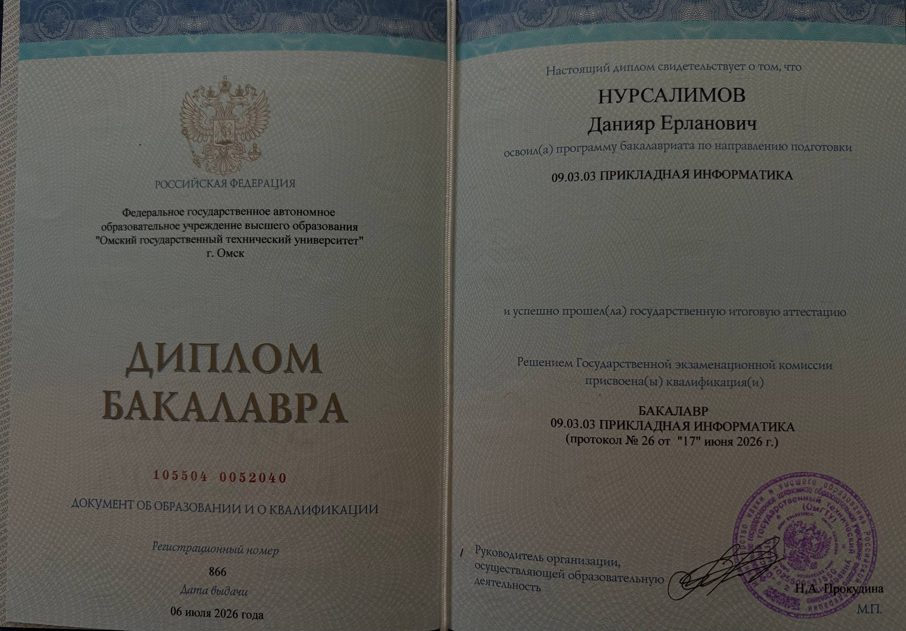

Мой путь в IT
Каждая точка на дороге — проект или этап, который привёл к дипломной работе. Нажмите «Подробнее», чтобы открыть детали, отчёты и демонстрации.
Опыт и образование
Преподаватель программирования
Вёл занятия по основам программирования и алгоритмическому мышлению для детей 6–14 лет: базовый синтаксис, логика, структуры данных и разбор практических задач вместе с учениками.
Прикладная информатика
ОмГТУ, направление 09.03.03. Проектирование и разработка ПО, базы данных, операционные системы, сетевые технологии, имитационное моделирование и методы оптимизации.
Диплом о высшем образовании
Бакалавр по направлению 09.03.03 «Прикладная информатика», Омский государственный технический университет. Дипломная работа защищена по теме экспертной системы мониторинга признаков эмоционального выгорания.

Технологии и инструменты
Готов пройти собеседование
Открыт к предложениям в Астане, к удалённой работе и к программе Digital Nomad Residency.
- Telegram: @username
- Email: email@example.com
- Телефон: +7 000 000 00 00